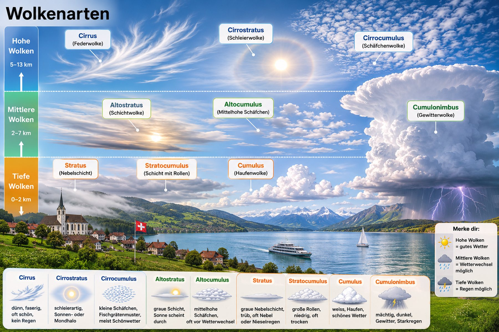
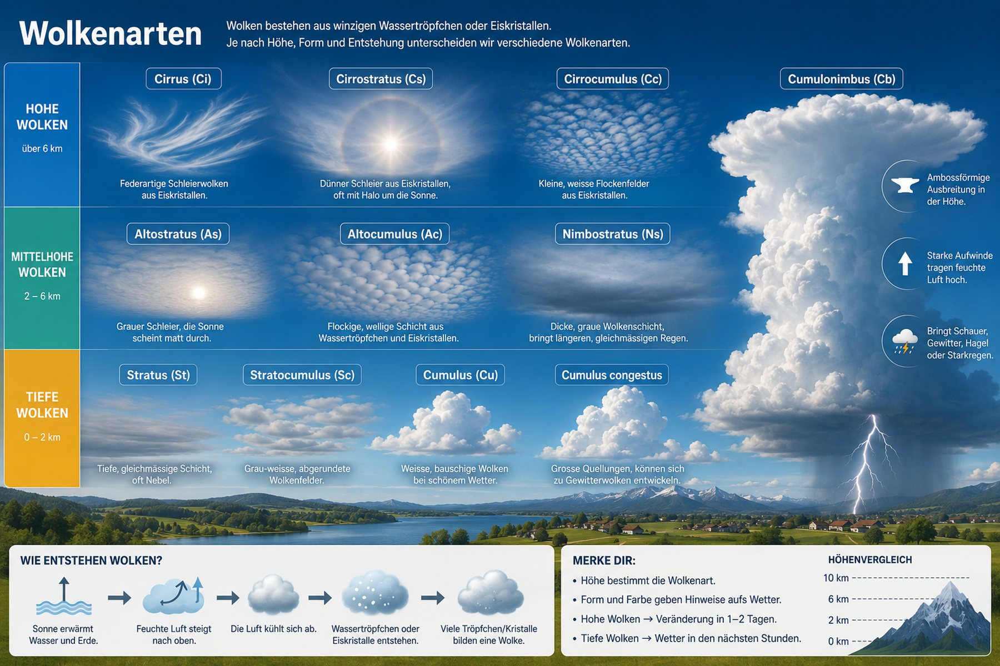

Wolken bestehen aus winzigen Wassertröpfchen oder Eiskristallen. Wo sie hängen, wie sie aussehen und wie sie entstanden sind – daraus ergeben sich zehn Gattungen. Auf dem Bild sehen Sie fast alle auf einmal.

Klicken Sie eine Wolke an – oder eine Zahl. Unten steht dann, woran Sie sie erkennen und was sie fürs Wetter bedeutet.
Dieselben Wolken als Übersichtstafel – mit der Entstehung und den wichtigsten Merksätzen. Rechts läuft der Cumulonimbus durch alle drei Stockwerke: Das ist kein Zeichenfehler, sondern genau sein Kennzeichen.

Wolkennamen muss man nicht auswendig lernen – man kann sie zusammensetzen. Alle kommen aus dem Lateinischen und beschreiben genau zwei Dinge: wie hoch die Wolke hängt und welche Form sie hat. Kommt Niederschlag heraus, gibt es noch eine dritte Silbe dazu.
Wählen Sie aus jeder Spalte einen Baustein. Nicht jede Kombination gibt es wirklich – gerade das ist die Übung.
Cirrus (Ci) lässt sich nicht zusammensetzen – die Wolke heisst einfach nach ihrer Form: cirrus = die Locke. Sie ist die höchste von allen, besteht reiner aus Eiskristallen als jede andere und hat gar keine Grundform aus Haufen oder Schicht. Sie ist nur ein paar Federstriche am Himmel.
Wenn dünne Cirrus-Federn dichter werden und sich zu einem Schleier verbinden, kommt meist eine Warmfront: Cirrus → Cirrostratus → Altostratus → Nimbostratus. Das ist die typische Abfolge ein bis zwei Tage vor dem Landregen.
Sie beginnt als harmlose Schönwetterwolke knapp über dem Boden und wächst an einem heissen Nachmittag bis zur Tropopause auf 12 km hinauf. Weiter geht es nicht: Dort oben wird die Luft nicht mehr kälter, die Wolke stösst an eine Decke und läuft seitlich aus. Das ist der Amboss.
Klicken Sie die Zahlen an.
In einer Schönwetter-Cumuluswolke steigt die Luft gemütlich. Im Cumulonimbus schiesst sie mit bis zu 100 km/h nach oben – und daneben stürzt kalte Luft genauso schnell wieder herunter. Diese Auf- und Abwinde direkt nebeneinander sind der Grund, warum Flugzeuge um Gewitterwolken herumfliegen und nie hindurch.
Sie sind auch der Grund für Hagel: Ein Tropfen wird nach oben gerissen, gefriert, fällt, wird wieder hochgerissen, bekommt eine neue Eisschicht – und das mehrmals. Schneidet man ein Hagelkorn auf, sieht man die Schichten wie Jahresringe. Erst wenn es zu schwer wird, fällt es endgültig herunter.